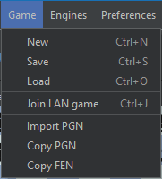
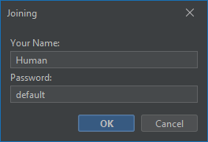

Játszma indítása, kezelése
Ez az oldal a "Game" menüpont alatt elérhető funkciók használatát részletezi.
New - Új játszma kezdése
Gyorsbillentyű: Ctrl+N
Ezt a menüpontot választva megjelenik a "New Game" dialógus ablak, amely segítségével beállíthatja az új partit.
White, Black
Itt állíthatja be a játékosok típusát, és azok paramétereit.
- Human: Emberi játékos, állítható névvel.
- Engine: Ezt a játékost a kiválasztott sakk engine irányítja.
- Player over LAN: Másik játékos a lokális hálózatról. Megadható a jelszó, amivel rz a játékos csatlakozni tud a játszmához.
Time Control
Itt állíthatja be a sakkórát. Választhat népszerű formátumok közül, vagy a "custom" opciót választva egyedi formátumot definiálhat. Külö-külön beállíthatja sötét és világos idejét, és a lépésenként hozzáadott idejüket, valamint az idő hozzáadásának típusát.
- NONE: Nincs hozzáadott idő.
- FISCHER: Lépés után az inkrementáció simán hozzáadódik a megmaradt időhöz.
- DELAY: Nem lépéskor adódik az órához az idő, hanem maga az óra később kezdi el számlálni az eltelt másodperceket.
- BRONSTEIN: Lépés után az órához hozzáadódik az ebben a lépésben felhasznált idő, és az inkrementáció minimuma.
Starting position
A meccs a kezdőpozícióból, vagy egy FEN jelöléssel megadott egyedi pozícióból indul. A FEN jelölést az alkalmazás a vágóélapról próbálja meg beolvasni.
Save - Játék mentéss
Gyorsbillentyű: Ctrl+S
Megnyílik egy fájlválasztó, melyben elmentheti a játszma aktuális állását. A partikat a LCG (Lite Chess Game) formátumban mentheti el, ami az alkalmazás saját formátuma.
Load - Játék betöltése
Gyorsbillentyű: Ctrl+O
Egy fájlválasztóval betölthet egy LCG formátumú mérkőzést. Ha a parti félbeszakadt, lehetősége van folytatni. Betöltéskor egy felugró dialógusban, az új játékhoz hasonló dialógusban kiválaszthatja a játékosokat amelyekkel folytatni szeretné a játszmát.
Join LAN game
Gyorsbillentyű: Ctrl+J
Itt tud csatlakozni a lokális hálózaton más által létrehozott partihoz. A jelszót, és a nevét egy felugró dialógusban kell megadnia.
Import PGN
A vágólapról beolvasott PGN fermátumó játszmát betölti az alkalmazás. Két emberi játékost hoz létre a PGN-ben meghatározott felek alapján. ha a játszma félbeszakadt, folytathatja azt.
Copy PGN
Az alkalmazás a játszma aktuális állását a vágólapra másolja PGN formátumú szövegként.
Copy FEN
Az alkalmazás a játszma aktuális állását a vágólapra másolja FEN formátumú szövegként.